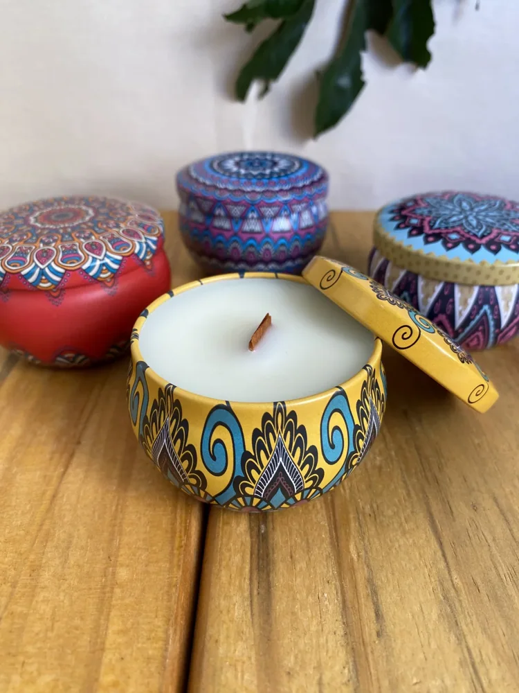
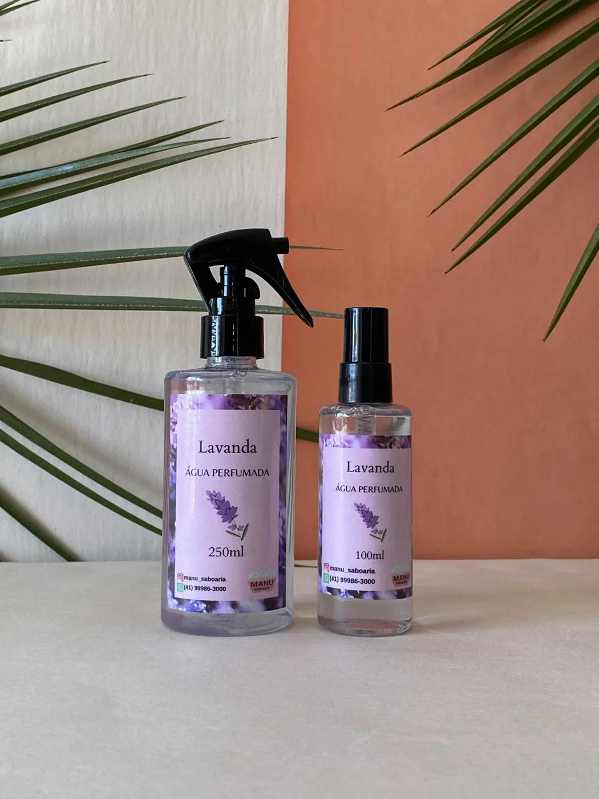

PEQUENAS PAUSAS, NOVAS SENSAÇÕES
Um carinho
para sentir.
Sabonetes, aromas e presentes que transformam o cuidado de todo dia em um momento só seu.
Produtos aromáticos e para banho.
 TEXTURAS, CORES & CUIDADO
TEXTURAS, CORES & CUIDADO
Um aroma.Mil sensações.
ESCOLHA O SEU PEQUENO RITUAL
Cuidado em cada detalhe.
Para o corpo, para a casa
e para quem mora no coração.
Vamos tentar outro aroma?
Nenhum produto encontrado. Experimente outra busca ou categoria.
Veja todas as 137 imagens na galeria
Valores do catálogo da Manu. Aromas e disponibilidade são confirmados no atendimento. Frete calculado à parte.
 PARA ALGUÉM ESPECIAL ♡
PARA ALGUÉM ESPECIAL ♡TEM CARINHO QUE VEM EM CAIXA
Presentear é dizer
“lembrei de você”.
Um aniversário, um agradecimento ou um mimo sem motivo. Combine sabonetes, aromas e pequenos cuidados em um presente com a sua intenção.
Vamos montar um presente?A ESSÊNCIA DA MANU
O cuidado mora
nas pequenas coisas.
A Manu Saboaria é feita de aromas, cores e detalhes. De sabonetes artesanais a fragrâncias para a casa, cada escolha é um convite para desacelerar e tornar a rotina mais gostosa.
São produtos feitos em Curitiba, com aquele jeito próximo de quem gosta de conversar, ajudar a escolher e preparar um carinho especial.
Acompanhe @manu_saboaria
feito em Curitiba, PR


Como faço meu pedido?
Escolha os produtos, adicione à sacola e toque em “Enviar pedido pelo WhatsApp”. A mensagem vai com os itens e valores para a Manu confirmar aromas, disponibilidade, pagamento e entrega. O pedido é concluído no atendimento.
Como funciona a entrega?
A Manu Saboaria é de Curitiba, PR. Consulte pelo WhatsApp as opções de entrega ou retirada, o frete e o prazo para o seu endereço antes de confirmar o pedido.
Posso escolher a fragrância?
Sim! As fotos mostram algumas opções da coleção. Informe o aroma de sua preferência nas observações da sacola; a Manu confirma o que está disponível e ajuda você a escolher.
Vocês montam presentes e lembrancinhas?
Fale com a Manu para combinar os produtos, a apresentação e a quantidade desejada. O valor e o prazo são definidos de acordo com a composição escolhida.
Quais são as formas de pagamento?
As opções de pagamento são informadas pela Manu no atendimento pelo WhatsApp, antes da confirmação do pedido. Não é necessário cadastrar dados de pagamento neste site.
Como cuidar dos meus produtos?
Guarde os sabonetes em local seco e, após o uso, utilize uma saboneteira que permita o escoamento da água. Siga as orientações do rótulo. Mantenha velas acesas sob supervisão, longe de tecidos, crianças e animais, e apague antes de sair.